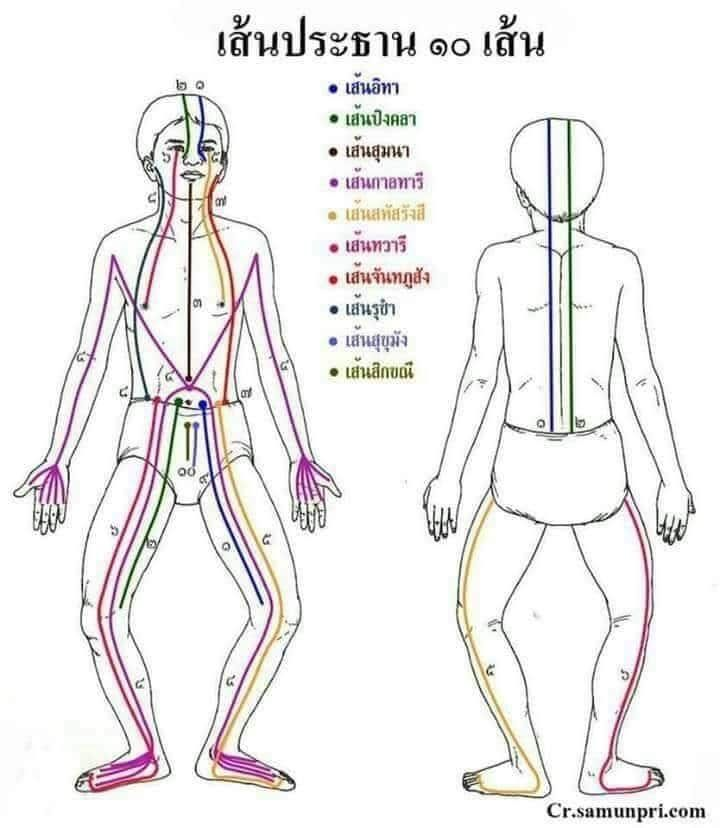

เส้นทางพลังชีวิต หัวใจสำคัญของการนวดแผนไทย
ตามคติแพทย์แผนไทย ร่างกายมนุษย์มีการไหลเวียนของ ลมปราณและพลังชีวิต เส้นประธานสิบ คือเส้นพลังงานหลักจำนวน 10 เส้น ที่เชื่อมโยงอวัยวะ ระบบร่างกาย และสมดุลของชีวิต
หากเส้นเหล่านี้เกิดการติดขัด จะส่งผลให้เกิดอาการเจ็บป่วย ปวดเมื่อย หรือไม่สบายกาย การนวดแผนไทยจึงมุ่งเน้นการเปิดเส้นเหล่านี้ เพื่อให้พลังชีวิตไหลเวียนอย่างปกติ
เกี่ยวข้องกับระบบประสาทและสมอง ช่วยลดอาการปวดศีรษะ
อ่านเพิ่มเติมส่งผลต่อระบบไหลเวียนโลหิตและการหายใจ ช่วยปรับสมดุลร่างกาย
อ่านเพิ่มเติมเป็นเส้นพลังงานกลาง เชื่อมโยงกายและใจ ทำให้เกิดความสงบ
อ่านเพิ่มเติมช่วยบรรเทาอาการปวดเมื่อยบริเวณแขน ขา และลำตัว
อ่านเพิ่มเติมเกี่ยวข้องกับดวงตาและการมองเห็น ลดอาการล้าของสายตา
อ่านเพิ่มเติมเส้นพลังงานเชื่อมต่อหัวใจและปอด ช่วยระบบหายใจ
อ่านเพิ่มเติมเส้นที่เชื่อมต่อข้อต่อและกล้ามเนื้อ ช่วยลดปวดเมื่อย
อ่านเพิ่มเติมเชื่อมต่อกระดูกสันหลังและร่างกายส่วนบน ช่วยความยืดหยุ่น
อ่านเพิ่มเติมเชื่อมต่อระบบย่อยอาหาร ช่วยการย่อยและขับถ่าย
อ่านเพิ่มเติมเชื่อมต่อระบบไตและกระเพาะปัสสาวะ ช่วยสมดุลพลังชีวิต
อ่านเพิ่มเติม